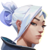
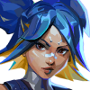
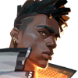
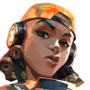
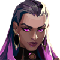

DUELISTAS:
Agentes de Duelista são geralmente agressivos e focados em combate. Suas habilidades são projetadas para ajudá-los a ganhar duelos contra os oponentes e assumir o controle do jogo. Eles são ideais para jogadores que preferem um estilo de jogo mais ofensivo.
Agentes de Duelista são geralmente agressivos e focados em combate. Suas habilidades são projetadas para ajudá-los a ganhar duelos contra os oponentes e assumir o controle do jogo. Eles são ideais para jogadores que preferem um estilo de jogo mais ofensivo.






INICIADORES:
Agentes de Iniciador são capazes de iniciar combates e criar oportunidades para a equipe atacar. Suas habilidades são projetadas para obter informações sobre a posição do inimigo e expô-los para que a equipe possa atacar com mais eficácia. Eles são ideais para jogadores que preferem um estilo de jogo mais agressivo e de apoio.
Agentes de Iniciador são capazes de iniciar combates e criar oportunidades para a equipe atacar. Suas habilidades são projetadas para obter informações sobre a posição do inimigo e expô-los para que a equipe possa atacar com mais eficácia. Eles são ideais para jogadores que preferem um estilo de jogo mais agressivo e de apoio.


CONTROLADORES:
Agentes de Duelista são geralmente agressivos e focados em combate. Suas habilidades são projetadas para ajudá-los a ganhar duelos contra os oponentes e assumir o controle do jogo. Eles são ideais para jogadores que preferem um estilo de jogo mais ofensivo.
Agentes de Duelista são geralmente agressivos e focados em combate. Suas habilidades são projetadas para ajudá-los a ganhar duelos contra os oponentes e assumir o controle do jogo. Eles são ideais para jogadores que preferem um estilo de jogo mais ofensivo.


SENTINELAS:
Agentes de Sentinela são responsáveis por proteger e controlar áreas específicas do mapa. Suas habilidades são projetadas para ajudá-los a defender pontos estratégicos e proteger a equipe contra ataques inimigos. Eles são ideais para jogadores que preferem um estilo de jogo mais defensivo.
Agentes de Sentinela são responsáveis por proteger e controlar áreas específicas do mapa. Suas habilidades são projetadas para ajudá-los a defender pontos estratégicos e proteger a equipe contra ataques inimigos. Eles são ideais para jogadores que preferem um estilo de jogo mais defensivo.